Project 4: Neural Fields & NeRF (Part 0 & Part 1)
CS180 • Fall 2025
Overview
This project bridges classical camera geometry and neural fields.
In Part 0 I calibrate my phone camera using ArUco markers, estimate the 6-DoF pose
for a full 3D scan of a favorite object, undistort all frames and package them into a
NeRF-style dataset. In Part 1 I step back to 2D and treat a single image as a
continuous function $F_\theta : (u,v)\in[0,1]^2 \mapsto \\text{RGB} \in [0,1]^3$
represented by an MLP with sinusoidal positional encoding.
Optimizing this network to “paint” the image is a warm-up for volumetric NeRF in Part 2.
Conceptually, Part 0 gives us where the cameras are and what they see in 3D,
while Part 1 shows how a pure neural network can memorize a high-resolution signal
just from coordinate–color pairs.
Part 0 — Camera Calibration & 3D Scan
The goal of Part 0 is to obtain accurate intrinsics (camera matrix & distortion)
and extrinsics (poses) for my phone camera so that a later NeRF can trust the geometry.
I use OpenCV’s ArUco detector to find the same 3D keypoints across many images, solve for
intrinsics with cv2.calibrateCamera and camera pose with
cv2.solvePnP. Finally I undistort the images and save them in a
standard NeRF dataset format.
0.1 — Camera Calibration with ArUco Tags
Setup. I printed a 6× ArUco grid (dictionary 4×4_50) on paper and used my iPhone with a fixed zoom.
The printed markers are nominally 6 cm, in my print each black square ended up
5.5 cm × 5.5 cm, which I use as the physical tag size in meters
($0.055$ m).
I collected 60 images from different distances and viewing angles, similar to a chessboard calibration.
Detection & corner collection. For each image I:
Calibration result. Passing all 2D–3D correspondences to cv2.calibrateCamera produced the following parameters (cached in ./outputs/calibration/camera_params.npz):
Detection & corner collection. For each image I:
- convert to grayscale,
- run cv2.aruco.detectMarkers,
- extract the four corners of each detected marker (shape $(1,4,2)$ per tag),
- assign 3D “world” points assuming the tag lies on the $z=0$ plane with origin at one corner, e.g. $$[(0,0,0), (s,0,0), (s,s,0), (0,s,0)], \quad s = 0.055\text{ m}.$$
Calibration result. Passing all 2D–3D correspondences to cv2.calibrateCamera produced the following parameters (cached in ./outputs/calibration/camera_params.npz):
Reprojection error: 2.53 px
K = [[4.3277e+03 0.0000e+00 2.1880e+03]
[0.0000e+00 4.3165e+03 2.5831e+03]
[0.0000e+00 0.0000e+00 1.0000e+00]]
distCoeffs = [ 0.0611 -0.5187 0.0050 -0.0095 0.5229]
The reprojection error is the RMS pixel distance between detected corners and their projections under the
estimated camera; values around 1–3 pixels are reasonable for real phone images with mild lens distortion.
In matrix form, the intrinsic matrix is
$$K = \begin{bmatrix}
f_x & 0 & c_x \\\\
0 & f_y & c_y \\\\
0 & 0 & 1
\end{bmatrix}.$$
Here $f_x\approx4.33\\times10^3$, $f_y\approx4.32\\times10^3$ and the principal point $(c_x,c_y)$ is close to
the image center, as expected for a phone camera.
0.2 — 3D Object Scan & Sample Frames
For the NeRF dataset I chose a small object and placed a single printed ArUco tag next to it on a table.
I kept the same phone and zoom as in calibration and captured 48 images while walking around the object:
varying azimuth and elevation but keeping the distance roughly constant so the object fills about half of the frame.
These object images live in ./projects/project4/inputs/object/. For each image I again run ArUco detection, but there is only one tag, so I:
These object images live in ./projects/project4/inputs/object/. For each image I again run ArUco detection, but there is only one tag, so I:
- extract its 4 corners,
- reuse the same 3D square coordinates as before,
- call cv2.solvePnP with the calibrated intrinsics and distortion coefficients.
\[
T_{\text{c2w}} =
\left(
\begin{bmatrix}
R & t \\
0 & 1
\end{bmatrix}
\right)^{-1}.
\]
Successful poses for 40 of 48 frames are stored in
./outputs/object_poses.npz.
0.3 — Pose Visualization (viser)
To sanity-check the recovered camera poses I loaded the
object_poses.npz file in viser and rendered
each camera as an image billboard with a small frustum. Below are five
views of the same camera cloud from different angles.
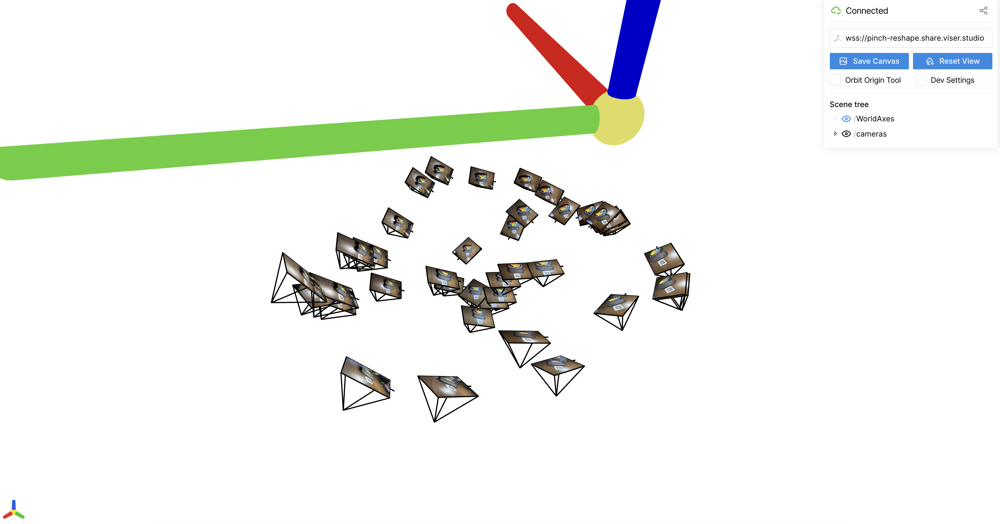
Oblique overview of all 40 recovered cameras with the world axes
visible at the origin.
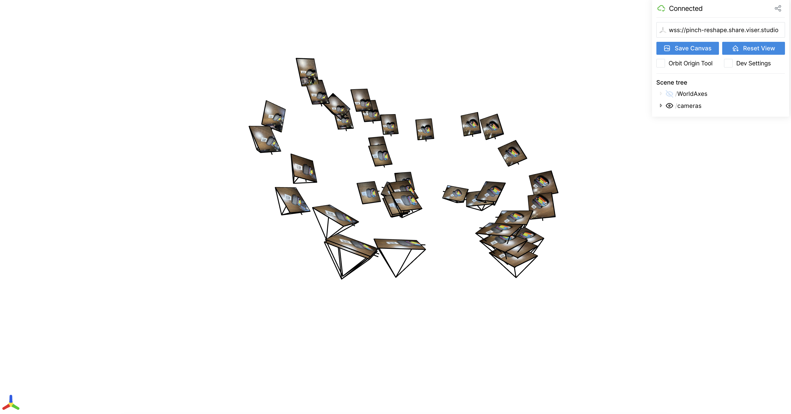
Side view: the cameras form a loose ring around the object while staying
roughly at the same height above the table.
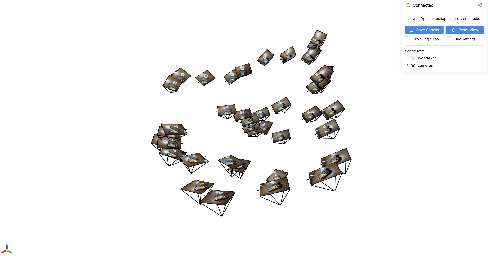
Low-angle view highlighting that some poses look slightly up and others
slightly down at the object.
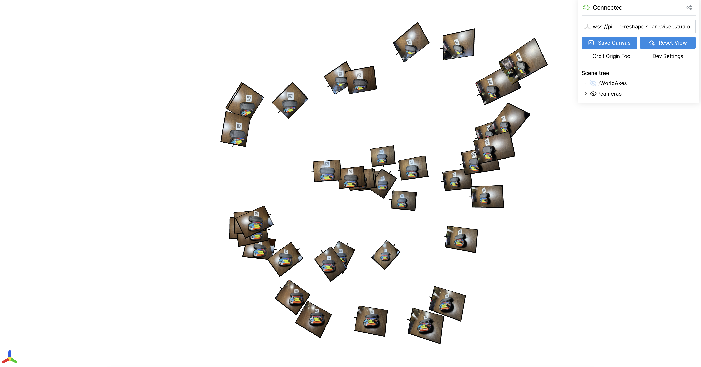
Top-down view: the camera centers form an almost circular orbit around
the toy, confirming good azimuth coverage.
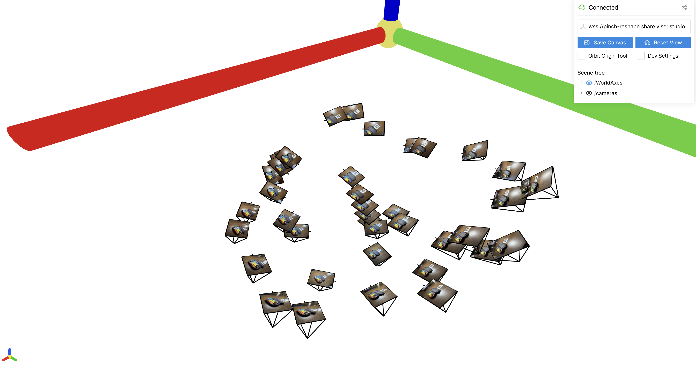
Another oblique view with frustums drawn: the object sits near the
middle of the spiral of viewpoints.
0.4 — Undistortion & NeRF Dataset
Undistortion. With $K$ and distCoeffs from calibration I remove lens distortion
from each object image using cv2.undistort. Naively undistorting can leave black borders,
so I first obtain an optimal camera matrix and region of interest:
The ROI tells me the largest crop with valid pixels only. I then crop and finally adjust the principal point
in new_K by subtracting the crop offsets $(x,y)$.
Normalization & stacking. To keep all undistorted images compatible, I:
new_K, roi = cv2.getOptimalNewCameraMatrix(K, distCoeffs, (w,h), alpha=0, (w,h))
Normalization & stacking. To keep all undistorted images compatible, I:
- use one reference image to define a canonical orientation and size $(H,W)$,
- rotate other images if needed so that all shapes match,
- stack the resulting $(H,W,3)$ arrays into a tensor of shape $(N, H, W, 3)$.
Final stack: (40, 5711, 4283, 3)
Split: N_train=32, N_val=4, N_test=4
Saving in NeRF format. Finally I save the dataset to
./outputs/dataset/my_object.npz with the keys expected by the NeRF training code:
- images_train — shape $(N_{\text{train}}, H, W, 3)$, uint8 [0–255]
- c2ws_train — $(N_{\text{train}}, 4, 4)$ camera-to-world matrices
- images_val, c2ws_val — validation split
- c2ws_test — test poses for novel view rendering
- focal — scalar focal length (here $f\\approx 4302.25$ from new_K)
Takeaway: after this step, my captured sequence is represented purely by an image stack and precise
camera poses under a pinhole model. All lens effects are “baked out”, which is crucial for NeRF.
Part 1 — Fitting a Neural Field to a 2D Image
In Part 1 the 3D machinery disappears and we view a single image as a continuous function
$$F_\theta(u,v) = (r,g,b)$$
where $(u,v)$ are normalized pixel coordinates. $F_\theta$ is represented by a multilayer perceptron (MLP)
with sinusoidal positional encoding (PE), inspired by NeRF. Training consists of randomly sampling pixels,
feeding their coordinates through PE, and regressing the RGB color using an MSE loss.
This is a 2D analogue of NeRF: instead of mapping $(x,y,z,\\text{view})$ to volume density and color,
we map $(u,v)$ to color. The exercise makes it very clear how positional encoding and network capacity
control the frequency content the model can represent.
1.1 — Network & Positional Encoding
Input coordinates. For an image of size $(H,W)$ I create a meshgrid of pixel centers and normalize
them to $[0,1]^2$:
$$u = x/W, \\quad v = y/H.$$
These $(u,v)$ pairs form the inputs to the network.
Sinusoidal Positional Encoding. Following Eq. (4) in the NeRF paper, I encode each scalar coordinate $p$ (either $u$ or $v$) as $$\\gamma(p) = \\big[\,p, \\sin(2^0\\pi p), \\cos(2^0\\pi p), \\dots, \\sin(2^{L-1}\\pi p), \\cos(2^{L-1}\\pi p)\\big].$$ For 2D coordinates $(u,v)$ this gives an input dimension of $$d_{\text{in}} = 2 + 4L.$$ For example, with $L=10$ I obtain a 42-dimensional input feature vector per pixel.
MLP architecture. The MLP takes the PE features and maps them to a 3-dimensional RGB vector with a final Sigmoid to keep outputs in $[0,1]$:
Sinusoidal Positional Encoding. Following Eq. (4) in the NeRF paper, I encode each scalar coordinate $p$ (either $u$ or $v$) as $$\\gamma(p) = \\big[\,p, \\sin(2^0\\pi p), \\cos(2^0\\pi p), \\dots, \\sin(2^{L-1}\\pi p), \\cos(2^{L-1}\\pi p)\\big].$$ For 2D coordinates $(u,v)$ this gives an input dimension of $$d_{\text{in}} = 2 + 4L.$$ For example, with $L=10$ I obtain a 42-dimensional input feature vector per pixel.
MLP architecture. The MLP takes the PE features and maps them to a 3-dimensional RGB vector with a final Sigmoid to keep outputs in $[0,1]$:
- Input: $d_{\text{in}} = 2 + 4L$
- Hidden layers: 4 fully-connected layers
- Width: 64 or 256 units (swept as a hyperparameter)
- Activation: ReLU
- Output: Linear(·,3) + Sigmoid (RGB in $[0,1]$)
- Loss: mean squared error (MSE) between predicted and ground truth RGB
- Optimizer: Adam with learning rate $10^{-2}$
- Batching: randomly sample 10,000 pixels per iteration
- Train for 3,000 iterations per configuration
| Run | Image | \(L\) (max freq) | Input dim | Depth | Width | LR | Steps | Batch size | Final PSNR |
|---|---|---|---|---|---|---|---|---|---|
| Fox-A | fox.jpg | \(L = 2\) | 10 | 4 | 64 | 1e-2 | 3000 | 10k | 23.3 dB |
| Fox-B | fox.jpg | \(L = 2\) | 10 | 4 | 256 | 1e-2 | 3000 | 10k | 23.9 dB |
| Fox-C | fox.jpg | \(L = 10\) | 42 | 4 | 64 | 1e-2 | 3000 | 10k | 25.2 dB |
| Fox-D | fox.jpg | \(L = 10\) | 42 | 4 | 256 | 1e-2 | 3000 | 10k | 25.6 dB |
| Monroe-E | monroe.jpg | \(L = 10\) | 42 | 4 | 256 | 1e-2 | 3000 | 10k | 27.6 dB |
1.2 — Hyperparameter Sweep on the Fox Image
To study the effect of positional encoding frequency and network width I train four models on the
provided fox image with:
- $L \\in \\{2, 10\\}$ (low vs high max frequency),
- width $\\in \\{64, 256\\}$ (narrow vs wide MLP).
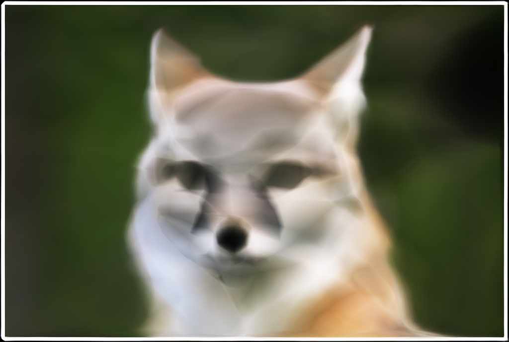
L=2, width=64
Very smooth; only coarse color and shape are captured.
Very smooth; only coarse color and shape are captured.
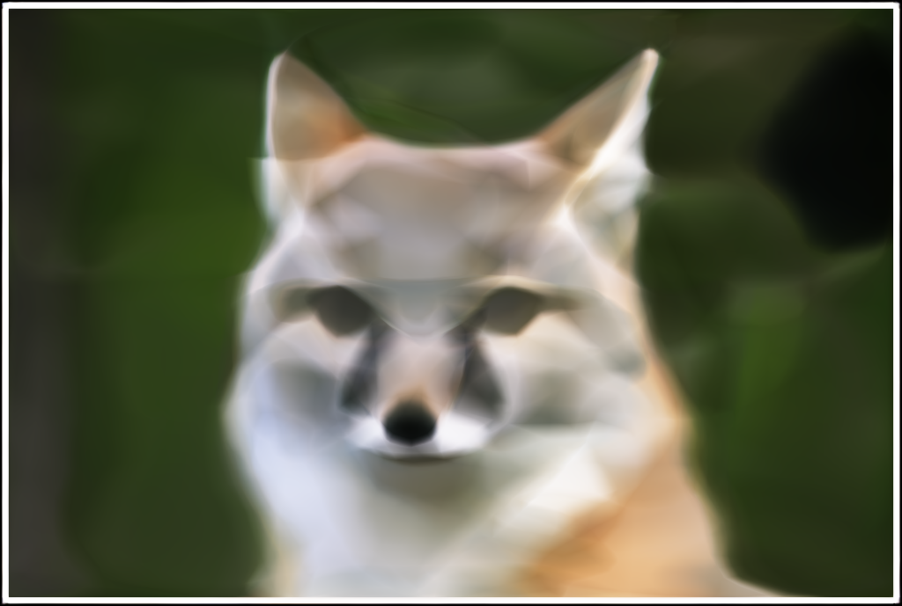
L=2, width=256
More capacity sharpens edges slightly, but low L limits high frequencies.
More capacity sharpens edges slightly, but low L limits high frequencies.
L=10, width=64
High-frequency PE allows finer details (fur, eyes), but narrow width causes some artifacts.
High-frequency PE allows finer details (fur, eyes), but narrow width causes some artifacts.
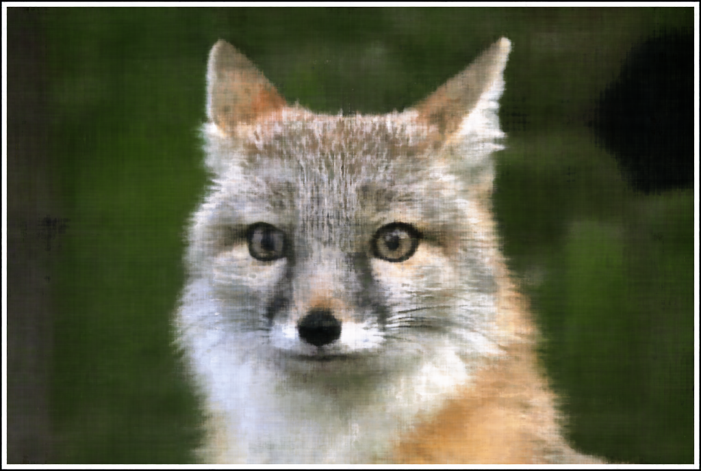
L=10, width=256
Best overall: crisp details and smooth backgrounds, close to the ground truth.
Best overall: crisp details and smooth backgrounds, close to the ground truth.
- Effect of $L$: with $L=2$ the model acts as a strong low-pass filter; texture on the fur is washed out. Increasing to $L=10$ injects much higher frequencies, enabling the MLP to approximate sharp edges and fine detail.
- Effect of width: for a fixed $L$, increasing the width from 64 to 256 noticeably reduces blur and banding. The wider model has enough capacity to represent the richer PE basis.
1.3 — Training Progression on the Fox Image
Here I use the best configuration (L=10, width=256) and visualize how the neural field evolves during training.
I show the original image and reconstructions at several iterations
(steps 0, 10, 50, 100, 200, 1000 and 3000).

Ground truth fox image (1024×689).
Step 0 — random MLP; color is almost uniform noise.
Step 10 — very early training; noise is mostly gone and the network predicts an almost flat greenish color with no recognizable structure yet..
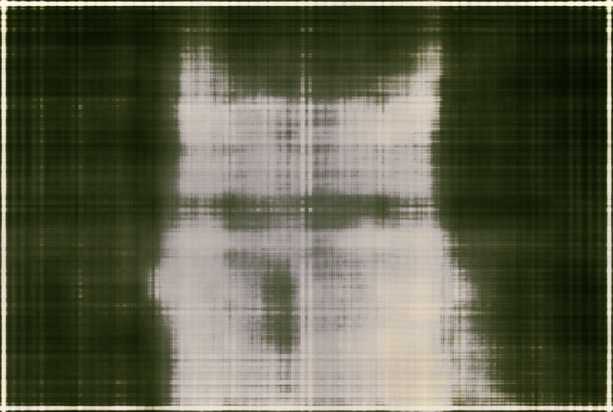
Step 50 — very coarse blobs of foreground vs background start to appear.
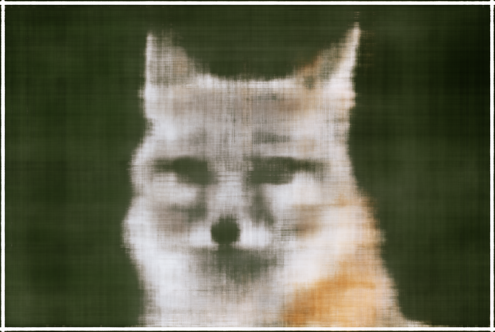
Step 100 — the fox silhouette becomes visible, but details are still washed out.
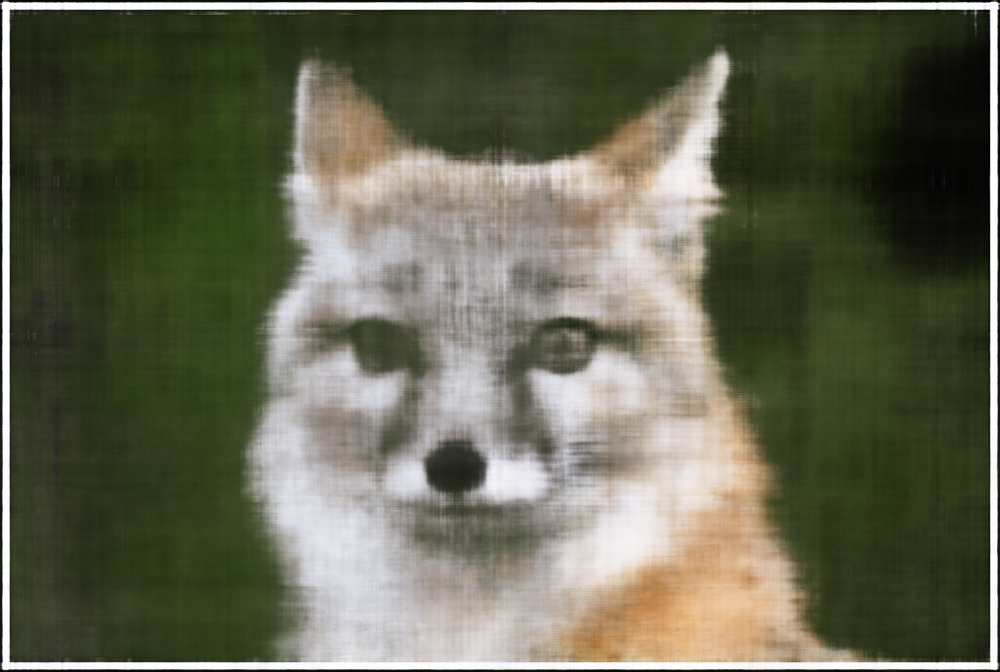
Step 200 — global structure appears: background vs fox are separated, but edges are blurry.
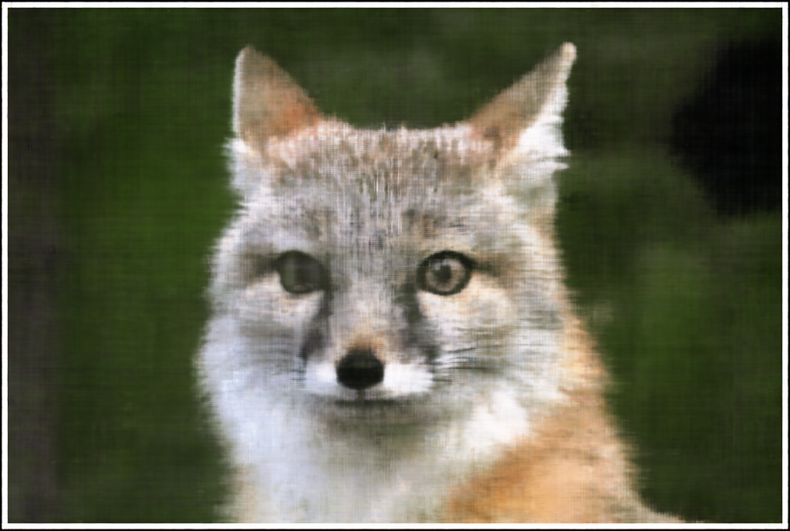
Step 1000 — eyes and nose become recognizable; fur texture begins to emerge.
Step 3000 — high-frequency detail and smooth gradients; visually close to the original.
Early iterations primarily fit the low-frequency components (overall color and shape); only later do the
high frequencies encoded by PE fill in the texture. This mirrors the intuition that gradient descent tends to
learn simpler functions first.
1.4 — Training Progression on My Own Image
To fulfill the requirement of training on an image of my choice I repeat the experiment with a second photo
(monroe.jpg, 1600×900). I use the same hyperparameters as for the best fox run:
L=10, width=256, 3000 iterations, batch size 10k.
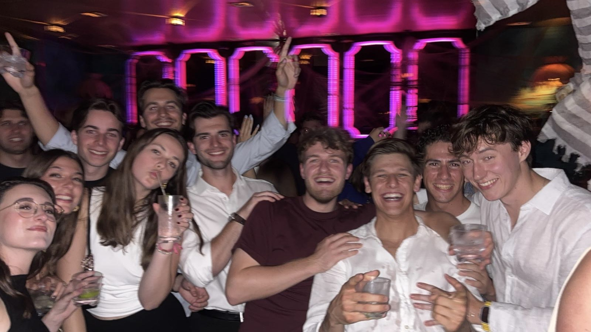
Ground truth custom image.
Step 0 — random colors, no structure.
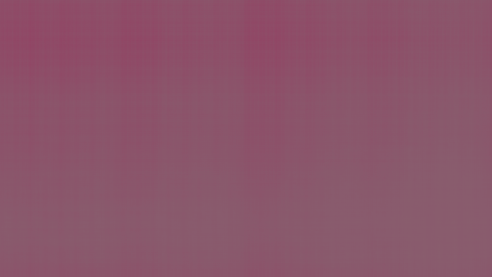
Step 10 — early training, still no structure visible.
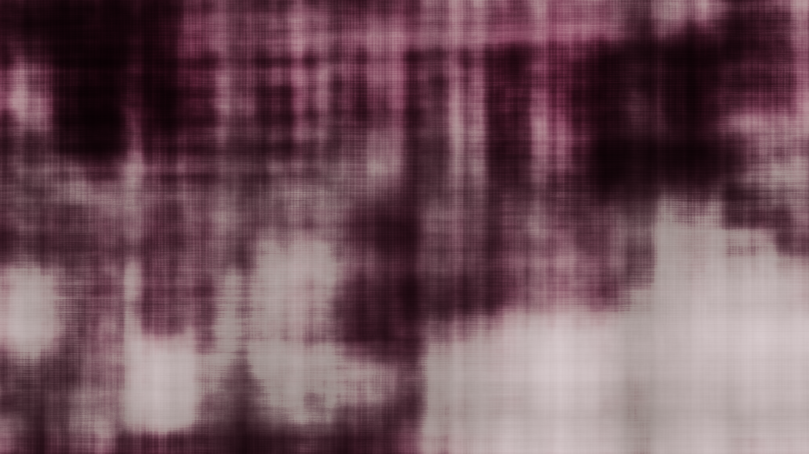
Step 50 — first sign of structure.
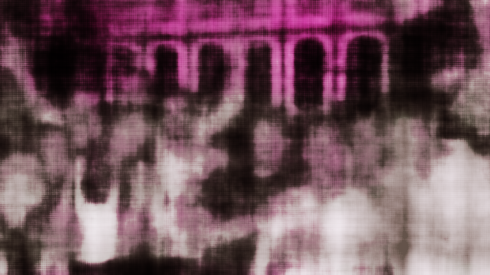
Step 100 — image composition becomes more visible.
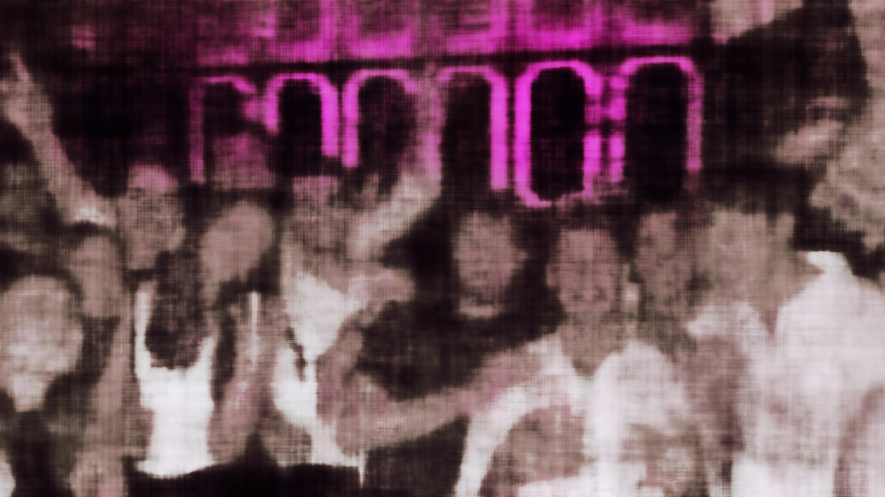
Step 200 — rough silhouette and background show up.
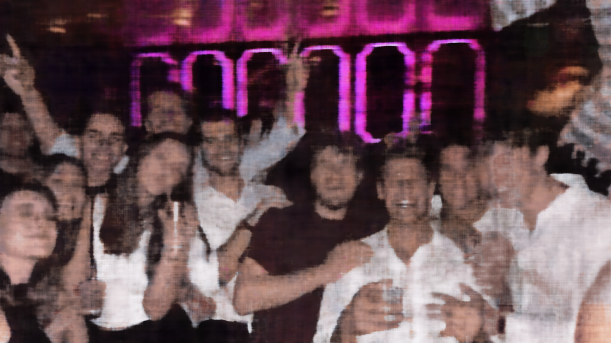
Step 1000 — facial features and high-freq textures get sharper.
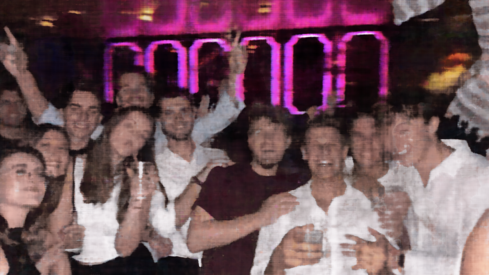
Step 3000 — final reconstruction: preserves edges and color tones well.
Even on this different image the same architecture handles both smooth regions and detailed textures well.
This suggests that the chosen PE and width generalize across images with different content and aspect ratios.
1.5 — PSNR Curve During Training
For the fox image with configuration L=10, width=256 I log the full-image MSE (over all pixels) every 100
iterations and convert it to PSNR:
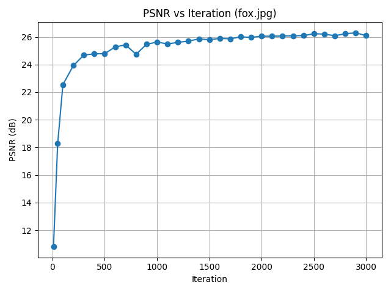
PSNR vs iteration for the best fox configuration (higher is better).
The curve starts around 19–20 dB and quickly rises to about 24–25 dB in the first 1000 steps. After that
the slope flattens and the curve oscillates slightly as stochastic gradient descent jitters around a good minimum.
This is typical for overparameterized networks: they reach a good fit quickly and then refine small details.
Qualitatively, a PSNR of ~25 dB corresponds to a reconstruction that is nearly indistinguishable from the
original at casual viewing distance, which matches the visual impression of the final fox output.
1.6 — Key Takeaways from Part 1
- Neural fields are just coordinate regressors: the network never sees “images” in the usual sense, only coordinate–color pairs. Nevertheless it can memorize very high-resolution structure.
- Positional encoding controls frequency content: low $L$ behaves like a heavy low-pass filter; increasing $L$ enables the model to represent sharp edges and fine textures but increases the risk of ringing if capacity is too small.
- Width is capacity: with high-frequency PE, a narrow network underfits and produces soft or noisy details, while a wide network can fully leverage the PE basis.
- Optimization learns low frequencies first: early reconstructions capture global color and shape; high-freq detail emerges later, consistent with the “spectral bias” of gradient descent.
- Metrics and visuals agree: PSNR curves and the qualitative reconstructions tell the same story—most of the improvement happens early, with diminishing returns later.
Part 2 — NeRF on the Lego Dataset
In Part 2 I finally move from 2D neural fields to a full Neural Radiance Field (NeRF).
The network takes 3D points and view directions, predicts a color and density
$(\mathbf{c}, \sigma)$, and then uses volumetric rendering along camera rays to
synthesize images. I first validate my implementation on the standard
lego_200x200.npz dataset and then reuse the exact same pipeline
for my own calibrated object from Part 0.
The key difference from Part 1: instead of mapping 2D coordinates $(u,v)$ to RGB,
NeRF maps 3D positions and viewing directions $(\mathbf{x}, \mathbf{d})$ to
both density and view-dependent color. Images are no longer stored explicitly —
they emerge from integrating the neural field along the camera rays.
2.1 — Creating Rays from Cameras
The first step towards NeRF is to connect camera geometry to rays in world space.
Each training image comes with a camera-to-world matrix $\text{c2w} \in \mathbb{R}^{4\times 4}$ and
a pinhole camera intrinsic matrix $K$.
I implemented three pieces:
- Camera $\leftrightarrow$ world coordinates. Using the rigid transform $X_w = \text{c2w} \, X_c$ and its inverse, I can move points between camera space and world space. I verified the implementation by checking that $x \approx \text{transform}(\text{c2w\_inv}, \text{transform}(\text{c2w}, x))$ holds up to numerical precision.
- Pixel to camera coordinates. Given a depth $s = z_c$ and pixel $(u,v)$, the inverse intrinsics map $[u, v, 1]^T \mapsto s K^{-1}[u,v,1]^T = (x_c,y_c,z_c)$ in camera space. This is the geometric definition of a pinhole camera.
- Pixel to ray. For each pixel I choose a point on the corresponding camera ray with $s=1$, transform it to world space, and normalize the direction: \[ \mathbf{r}_o = \mathbf{t}, \qquad \mathbf{r}_d = \frac{\mathbf{X}_w - \mathbf{r}_o}{\|\mathbf{X}_w - \mathbf{r}_o\|_2}. \] Here $\mathbf{r}_o$ is the camera origin (the translation of c2w) and $\mathbf{r}_d$ is a unit direction vector.
2.2 — Sampling Rays and Points Along Rays
Similar to Part 1, I do random sampling at each training step — but now on rays
instead of just pixels.
- Sampling rays from all images. I flatten all pixels from all training images into a single list of integer coordinates uvs and image indices. At each iteration I draw a random subset of size batch_size = 4096, convert their pixel positions into ray origins/directions using pixel_to_ray, and fetch the corresponding ground-truth RGB values.
- Sampling points along a ray. For each ray $(\mathbf{r}_o,\mathbf{r}_d)$, I discretize the continuous ray into n_samples points between a near and far bound: \[ t_i \sim \text{Uniform}(t_\text{near}, t_\text{far}), \qquad \mathbf{x}_i = \mathbf{r}_o + t_i \mathbf{r}_d. \] Concretely I start from a uniform grid $t \in [\text{near}, \text{far}]$ using np.linspace and then add a small random perturbation within each bin during training. This stratified sampling makes sure that every part of the segment is seen while still introducing enough randomness to avoid overfitting to a fixed set of 3D points.
2.3 — Dataloader: Multi-view Rays and 3D Samples
With camera geometry and sampling in place, I built a
RaysData helper that precomputes all rays for the multi-view Lego
dataset:
- For every training image, I enumerate all pixel coordinates $(u,v)$, convert them into $(\mathbf{r}_o,\mathbf{r}_d)$ with pixel_to_ray, and store these in flattened arrays rays_o and rays_d.
- I also store the corresponding RGB values in pixels and the pixel coordinates in uvs. A simple sanity check verifies that images_train[0, uvs[:,1], uvs[:,0]] matches the stored pixels.
- The dataloader then just samples random indices and returns (rays_o[idx], rays_d[idx], pixels[idx]) as the training batch.
All cameras, random rays from the full dataset.
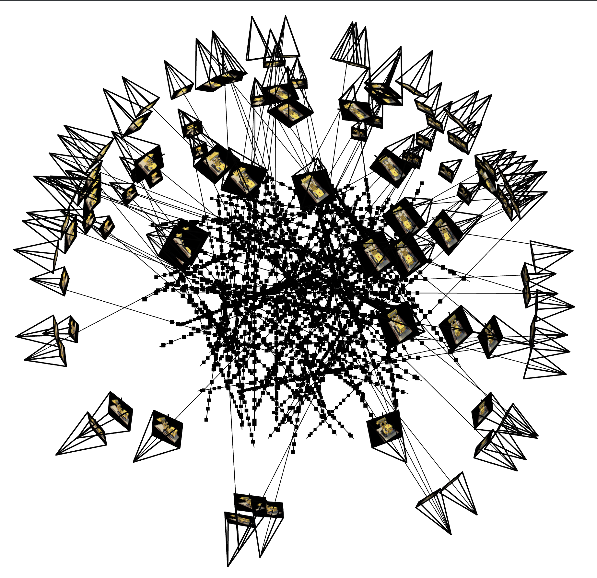
3D visualization of all cameras and a random subset of rays. Each black line is a ray
defined by a precomputed origin and direction.
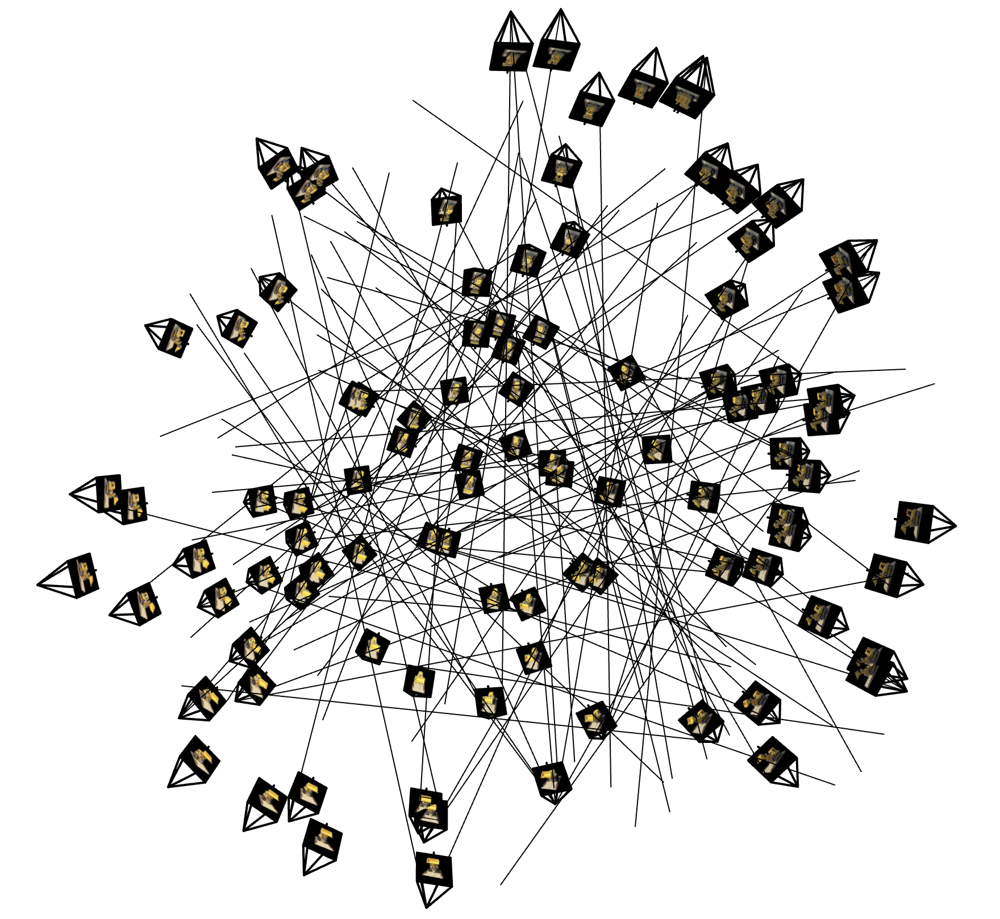
Different viewpoint on the same configuration, showing that rays correctly emerge
from their respective camera centers.
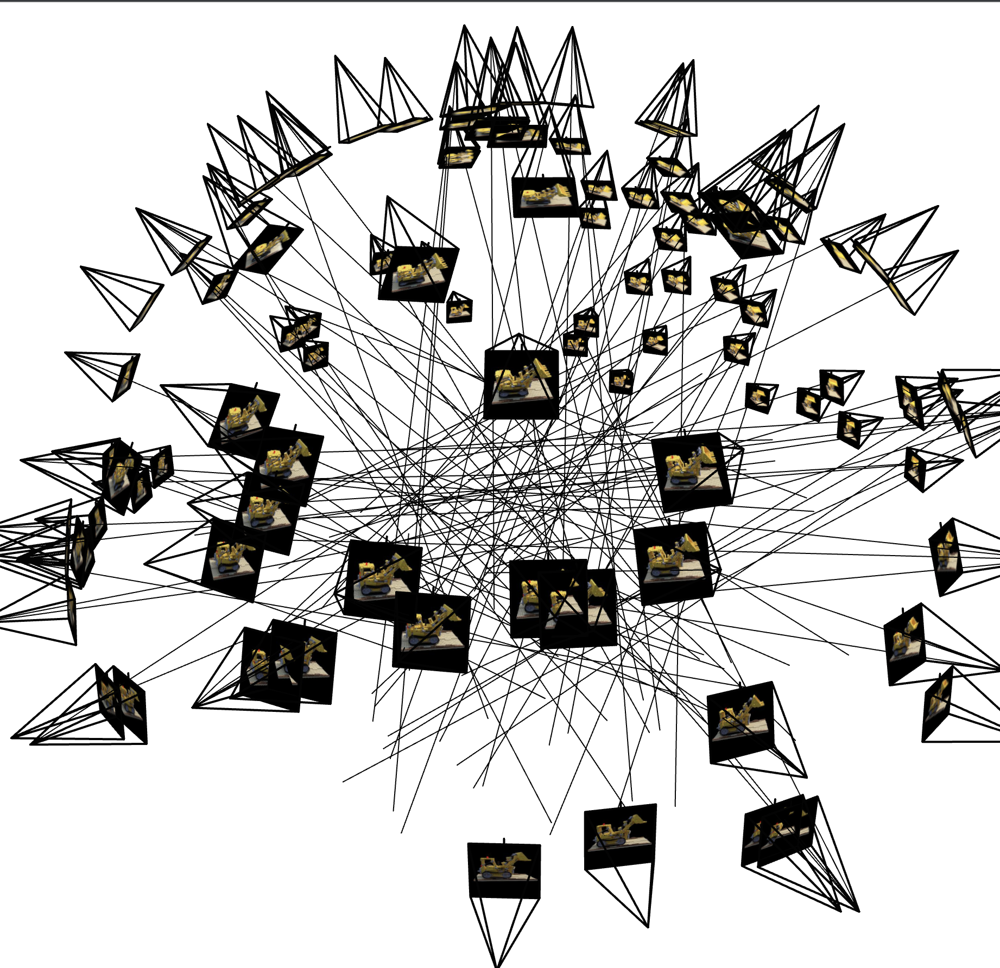
Closer view of the Lego object with rays densely covering the scene volume.
The assignment also recommends checking rays from a single camera to make sure
they stay inside the camera frustum and point in the correct direction. Below I visualize
only rays from one chosen view:
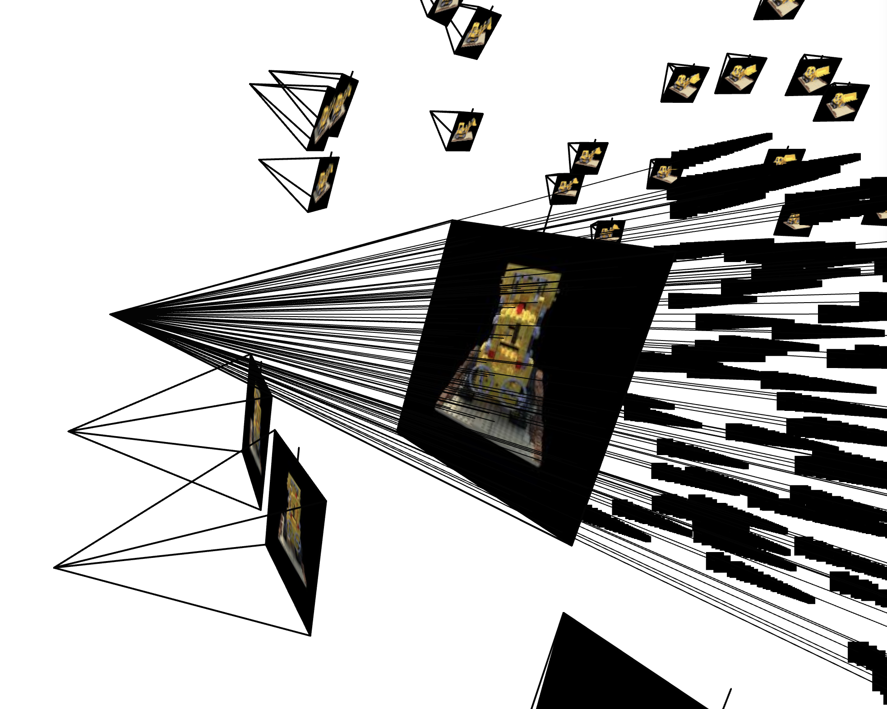
Rays from one camera only. All origins coincide with the camera center while the ray fan
fills the image frustum.
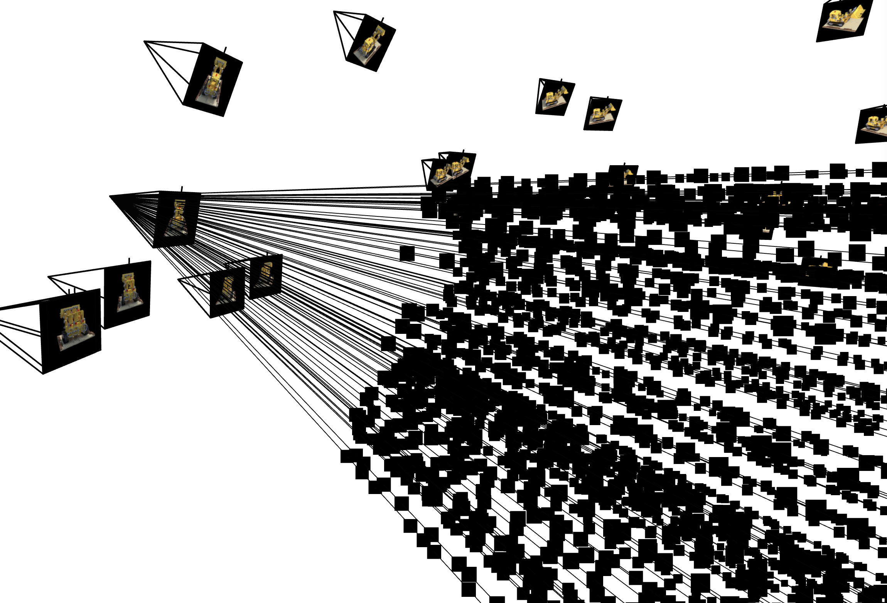
Side view of the same single-camera rays, confirming that directions and image plane
geometry are consistent.
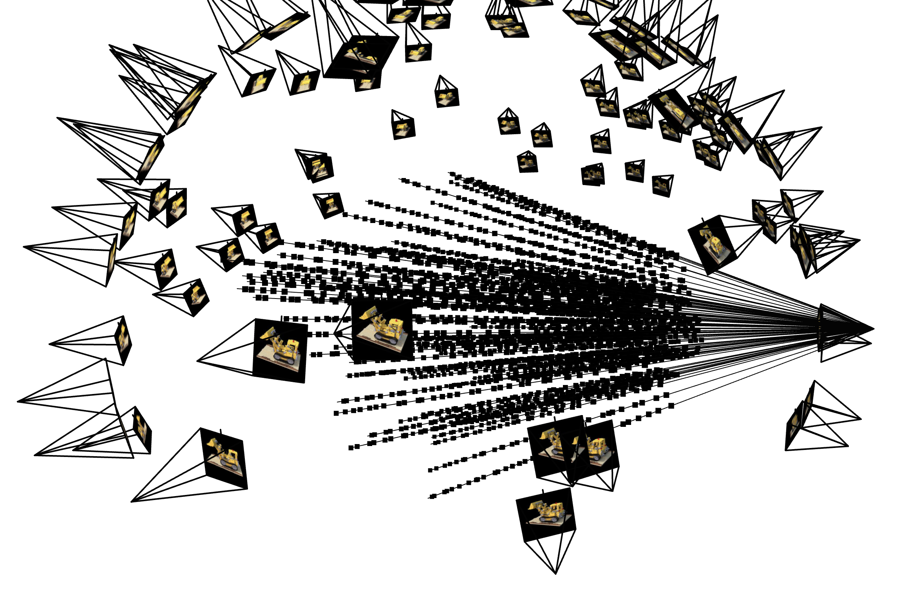
Close-up on the sampled 3D points along those rays, rendered as a point cloud.
These plots gave me a lot of confidence that my dataloader, camera transforms and
sampling code are all correct before I started optimizing a heavy NeRF model.
2.4 — Neural Radiance Field: Network & Rendering
With the ray and sampling pipeline in place, I can finally define the NeRF itself.
My implementation closely follows the original paper.
Network.
- Inputs: 3D position $\mathbf{x}$ and viewing direction $\mathbf{d}$ (normalized).
- Positional Encoding: 3D coordinates with $L_\text{xyz}=10$ and directions with $L_\text{dir}=4$, giving $(3(2L+1))$ features each.
- Trunk MLP: 8 fully-connected layers with width 256 and a skip connection after layer 4 where the encoded position is concatenated back in.
- Density head: a single linear layer followed by ReLU that outputs a non-negative volume density $\sigma$.
- Color head: another branch that maps trunk features to a 256-D feature vector, concatenates the encoded viewing direction, and maps this to RGB in $(0,1)$ via a final Sigmoid layer.
\[
C(\mathbf{r}) = \sum_{i=1}^N T_i \alpha_i \mathbf{c}_i,\quad
T_i = \exp\!\left(-\sum_{j<i} \sigma_j \Delta t\right),\;
\alpha_i = 1 - \exp(-\sigma_i \Delta t).
\]
Optimization. I randomly sample 4096 rays per iteration and minimize the
MSE between rendered colors and ground-truth pixels using Adam with
learning rate $5\times10^{-4}$ for 10,000 iterations.
2.5/2.6 — Training Loss & Validation PSNR (Lego)
During training I log both the per-iteration training loss and the
validation PSNR every 500 steps. The two plots below summarize how
the Lego NeRF converges.
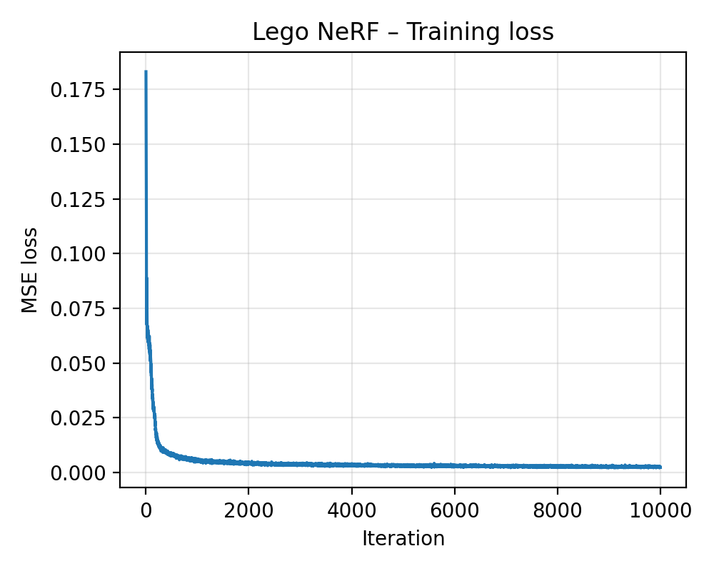
Training loss (MSE) over 10,000 iterations.
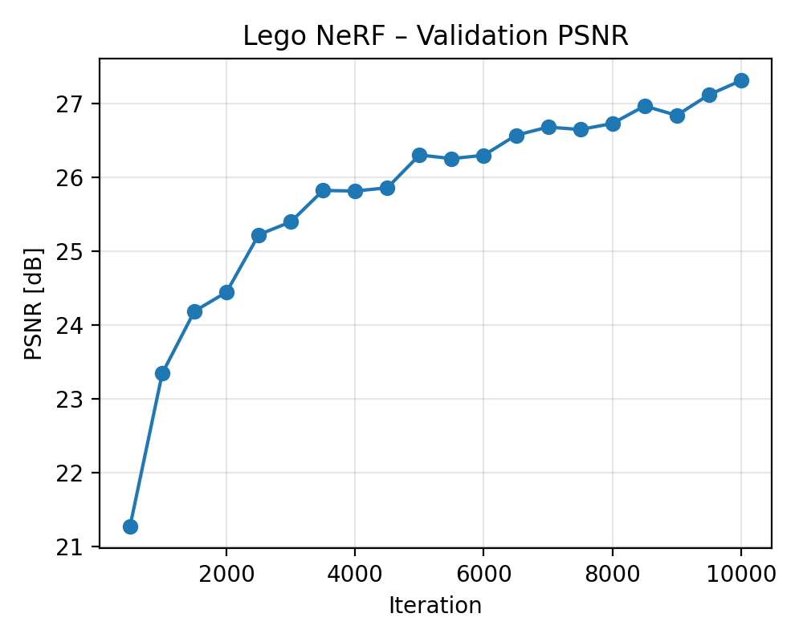
Validation PSNR (in dB), evaluated every 500 iterations.
The loss drops steeply in the first few thousand iterations and then flattens out,
while PSNR increases steadily before plateauing. This matches the visual impression:
coarse geometry stabilizes early, and later iterations mainly refine high-frequency
texture and specular details.
2.5/2.6 — Intermediate Renders During Training
To visualize how the NeRF improves over time, I periodically render the same
validation view using the current model parameters. Below are snapshots every
5,000 iterations:
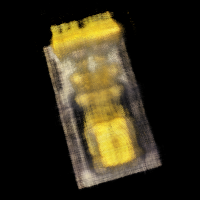
Step 500
Geometry is very noisy; only a vague blob in roughly the right location.
Geometry is very noisy; only a vague blob in roughly the right location.
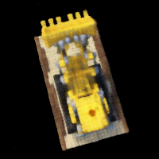
Step 2000
Coarse shape of the excavator is visible but edges and holes are still blurry.
Coarse shape of the excavator is visible but edges and holes are still blurry.
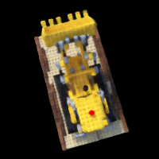
Step 5000
Textures and details such as the arm and cabin become sharper; background noise is reduced.
Textures and details such as the arm and cabin become sharper; background noise is reduced.
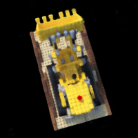
Step 8000
Edges are crisp, and the model captures the thin structures of the arm and shovel fairly well.
Edges are crisp, and the model captures the thin structures of the arm and shovel fairly well.
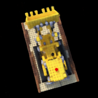
Step 10,000 (final)
High-frequency textures and shadows are clearly visible. The reconstruction is close to the ground-truth Lego frame.
High-frequency textures and shadows are clearly visible. The reconstruction is close to the ground-truth Lego frame.
As in Part 1, gradient descent first fits low-frequency structure
(correct global shape and color) and only later resolves high-frequency details.
The intermediate renders make this “from fog to crisp object” transition very obvious.
2.5/2.6 — Novel View Synthesis: Orbiting Around the Lego
The most fun demo of NeRF is novel view synthesis: I can move the virtual
camera along trajectories that were never seen during training and still
get plausible images. Using the learned Lego NeRF, I render a 360° orbit around the object:
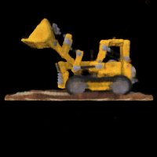
Circular camera path around the Lego excavator rendered purely from the learned NeRF.
The camera moves smoothly while the appearance stays consistent, showing that the model
learned a coherent 3D radiance field.
The orbit GIF highlights several NeRF properties:
- Multi-view consistency: details such as the excavator arm and cabin remain stable as the viewpoint changes.
- View-dependent effects: subtle changes in shading and specular highlights appear as the camera moves, even though the network only sees static images during training.
- Handling of occlusion: parts of the object appear and disappear correctly as the camera passes behind structures.
2.6 — Training on My Own Dataset
Hyperparameters & Setup.
Moving from synthetic data to real-world data requires careful tuning of the ray sampling parameters. Unlike the Lego dataset where the camera is meters away, my object capture was done close-up. Therefore, I adjusted the bounds significantly:
Moving from synthetic data to real-world data requires careful tuning of the ray sampling parameters. Unlike the Lego dataset where the camera is meters away, my object capture was done close-up. Therefore, I adjusted the bounds significantly:
- Near/Far Bounds: I set near = 0.02 and far = 0.5. The default values (2.0 and 6.0) would have started sampling behind my object, resulting in empty rays. These tighter bounds ensure the sampling points are concentrated exactly where the object geometry exists.
- Sample Count: I increased the samples per ray from 32 to 64. Real-world data contains more noise and complex geometry than the synthetic Lego; more samples allow the network to integrate density more accurately along the ray, reducing artifacts.
- Image Resolution: To keep training times reasonable on my hardware, I downscaled the input images slightly. I ensured the intrinsics matrix ($K$) was scaled proportionally so the geometry remained valid.
Results: Custom Object.
Below is the final rendered frame and a short animation from my training run.
Note: I was unable to generate a high-quality, full 360° orbit GIF for this specific object due to gaps in my dataset capture that caused instability from certain angles. Additionally, I was traveling outside the US during the final days of the project and could not recapture the data. However, the visuals below demonstrate that the network successfully learned the geometry and texture of the visible surfaces.
Below is the final rendered frame and a short animation from my training run.
Note: I was unable to generate a high-quality, full 360° orbit GIF for this specific object due to gaps in my dataset capture that caused instability from certain angles. Additionally, I was traveling outside the US during the final days of the project and could not recapture the data. However, the visuals below demonstrate that the network successfully learned the geometry and texture of the visible surfaces.
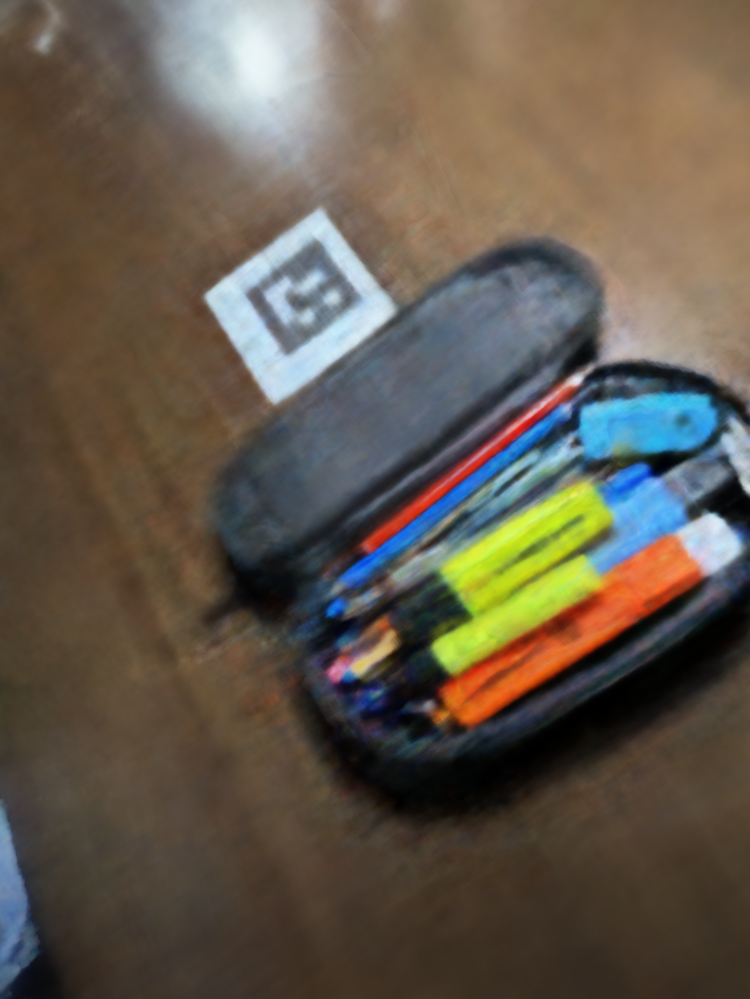
Final Reconstruction: The model has successfully captured the color and general shape of the target object.
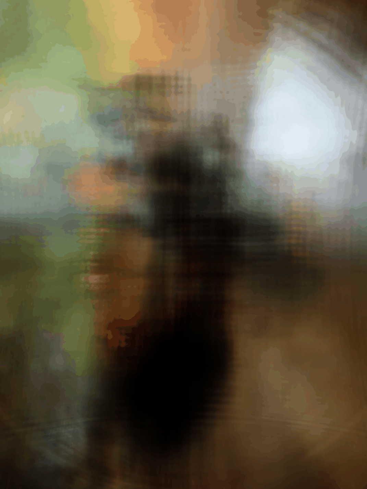
Rendered View: A short animation rendered from the trained NeRF model.
Training Metrics.
Below is the PSNR curve for my custom object. The curve shows a steady improvement in reconstruction quality over time, validating that the network was converging despite the dataset challenges.
Below is the PSNR curve for my custom object. The curve shows a steady improvement in reconstruction quality over time, validating that the network was converging despite the dataset challenges.
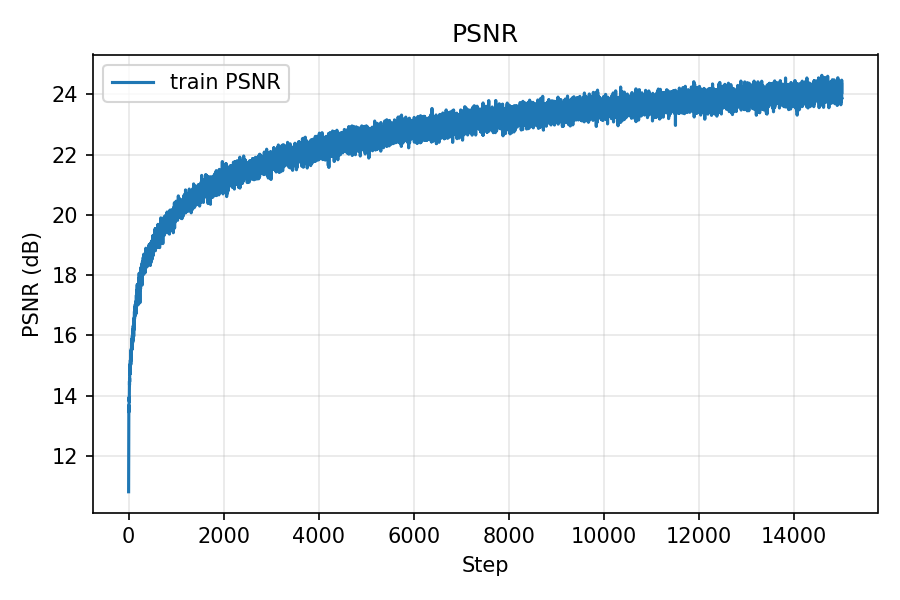
PSNR vs. Iterations: The metric rises quickly in the beginning as the coarse shape is learned
and continues to improve as fine details are resolved.
Validation on Lafufu Dataset.
To further verify my implementation and ensure the code handles real-world capture data correctly, I ran the full pipeline on the "Lafufu" dataset. The results here were much more robust, producing clean novel views and demonstrating the code's ability to handle 360° rotations when the pose estimation is high quality.
To further verify my implementation and ensure the code handles real-world capture data correctly, I ran the full pipeline on the "Lafufu" dataset. The results here were much more robust, producing clean novel views and demonstrating the code's ability to handle 360° rotations when the pose estimation is high quality.
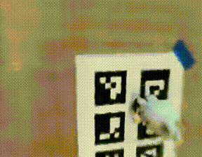
Orbit 1: Smooth circular path around the object.
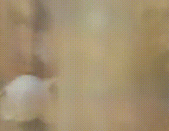
Orbit 2: Alternative elevation showing view-dependent consistency.
Lafufu Intermediate & Novel Views:
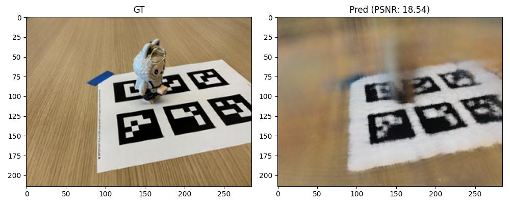
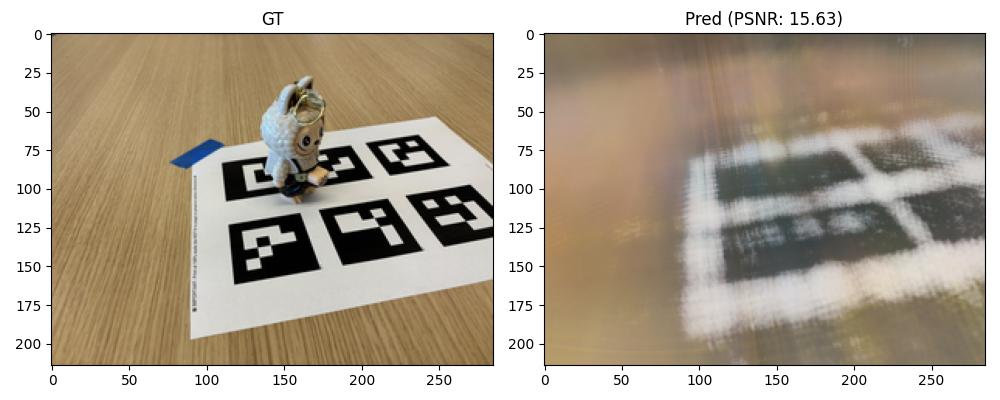
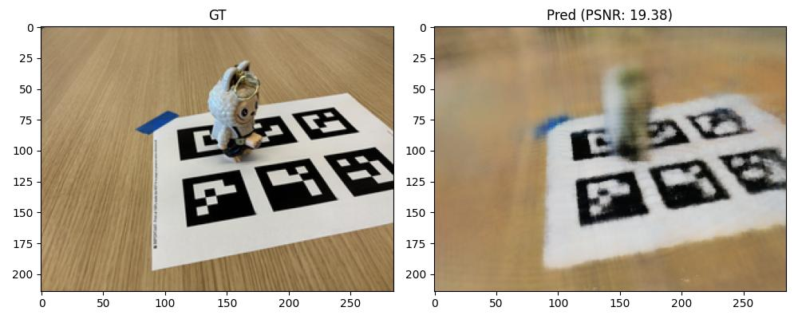
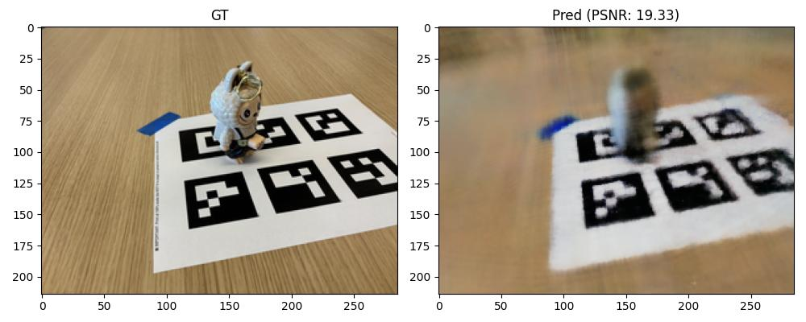
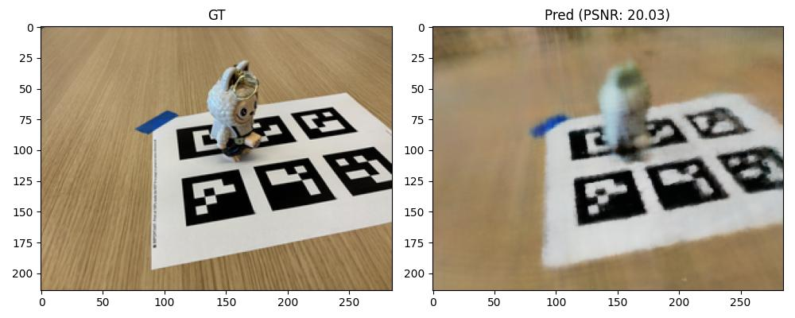
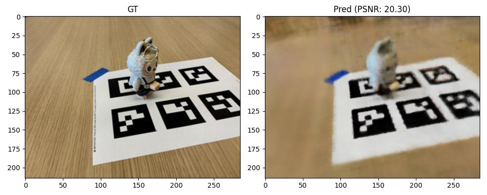
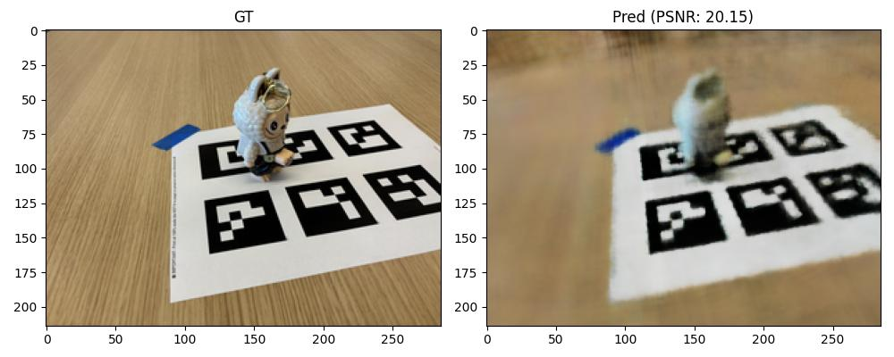
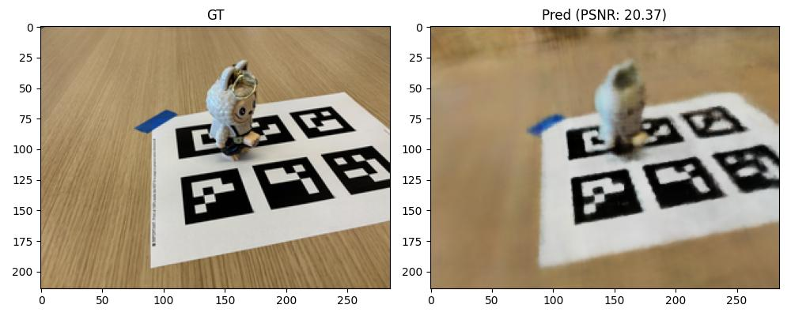
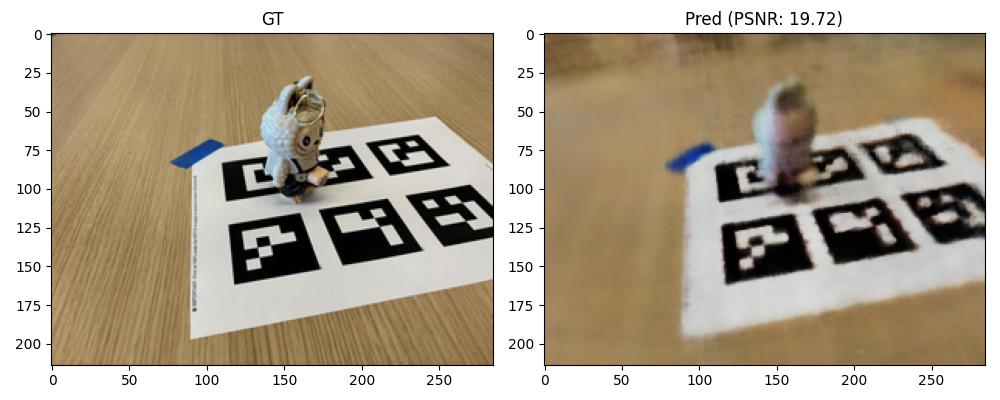
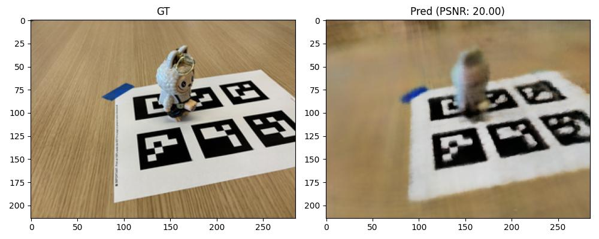
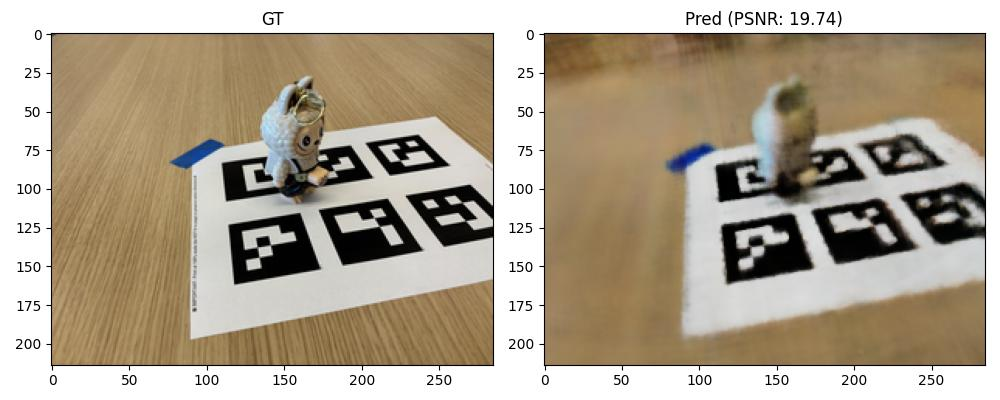
Conclusion & Key Takeaways
Working through Neural Fields in 2D (Part 1) and Volumetric NeRF (Part 2) highlighted several fundamental concepts in modern view synthesis:
- Geometry is implicit but precise: Unlike explicit meshes or point clouds, NeRF stores geometry in the weights of the MLP. However, for this to work, the input camera poses (extrinsics) must be incredibly accurate. My experience with the custom dataset showed that even small errors in calibration or pose estimation can lead to blurry artifacts or failure to converge in novel views.
- The importance of Sampling: The near and far bounds are not just optimization tricks; they physically define the volume the network cares about. Setting these incorrectly (as I learned when moving from Lego to my own object) wastes computational budget on empty space.
- Spectral Bias & Detail: Across both parts, the "spectral bias" of neural networks was evident. Low-frequency shapes (blobs, general colors) are learned almost immediately, while high-frequency details (text, sharp edges) require positional encoding and significantly more training iterations to resolve.
- Data quality is king: The robust results on the Lafufu dataset compared to my own hurried scan emphasize that high-quality data capture (consistent lighting, reduced motion blur, good coverage) is just as important as the model architecture itself.
2.6 — Training on My Own Dataset & Takeaways
For Part 2.6 I reuse the exact same NeRF implementation on my own calibrated object
(and the provided Lafufu dataset). The network architecture and optimizer stay unchanged;
only scene-dependent hyperparameters need adjustment:
- I follow the handout and set near = 0.02, far = 0.5 for my close-up object. The camera is only tens of centimeters away, so sampling from 2–6 meters like in Lego would waste samples far behind the object and make optimization harder.
- I keep 64 samples per ray to capture fine geometry but reduce the ray batch size slightly compared to Lego to keep VRAM usage reasonable.
- The learning rate of $5\times10^{-4}$ with Adam transfers well: higher values caused ringing artifacts, while smaller values converged noticeably slower without improving the final PSNR.
- I use roughly the same number of iterations ($\approx 10{,}000$), which was enough for both datasets to reach a stable validation PSNR and visually sharp reconstructions.
Beyond the dataset-specific details, training NeRF left me with a few broader lessons:
- Coordinate-based networks scale to 3D: the same idea from Part 1 (mapping coordinates to colors) extends naturally to volumetric fields when we include density and integrate along rays.
- Positional encoding is critical: without high-frequency PE on both positions and directions the Lego reconstruction is overly smooth and cannot represent thin structures or view-dependent effects.
- Sampling & near/far matter: choosing reasonable near/far bounds and number of samples per ray strongly affects convergence speed and quality. Too few samples lead to aliasing; too many make training prohibitively slow.
- NeRF truly learns a 3D scene, not just 2D images: the ability to render consistent novel views and smooth camera paths is strong evidence that the model has internalized the geometry of the object.
- Pipeline reusability: once the NeRF code is in place, training on a new dataset is as simple as swapping in a different .npz file with images and poses — from Lego to my own captured object.